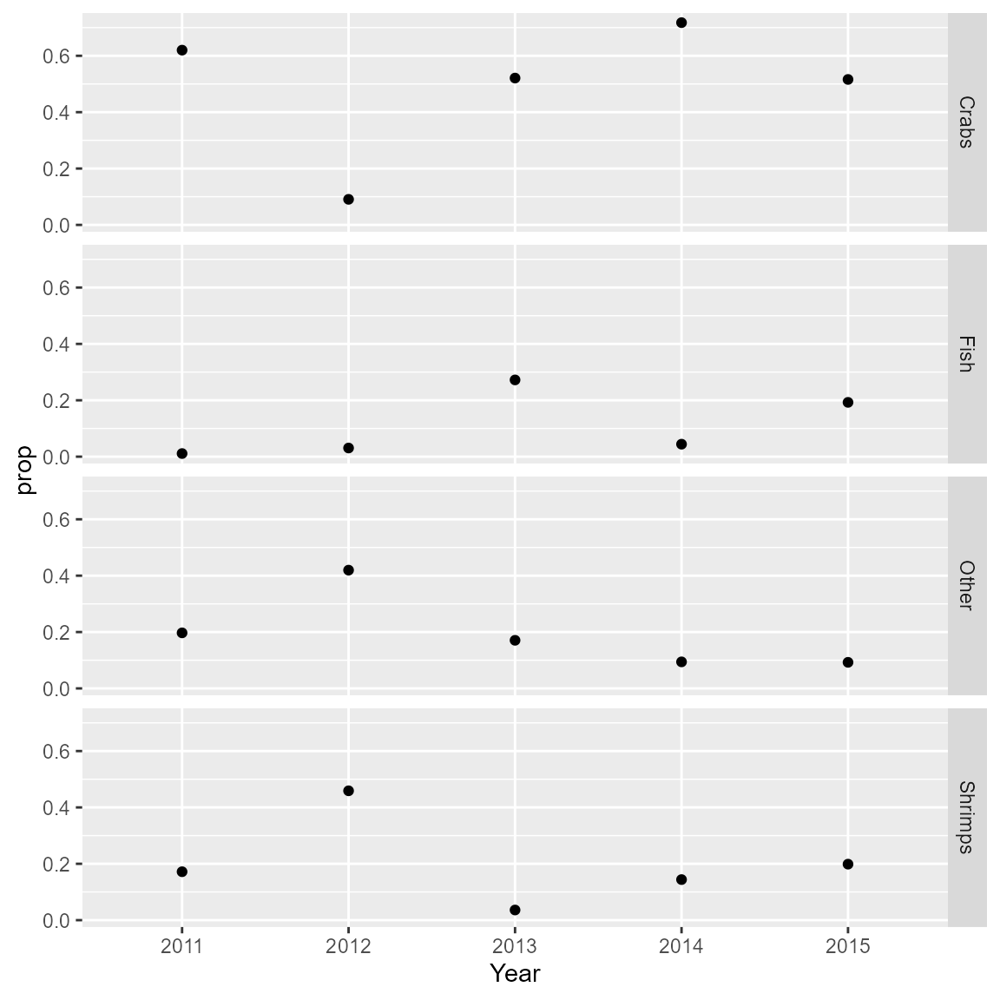

Predator expanded diet
James T. Thorson
Source:vignettes/web_only/predator_expanded_diet.Rmd
predator_expanded_diet.Rmd# Joint model for stomach content, predator biomass catch rate, and predator-expanded-stomach-contents (PESCs)
We developed an approach that fits a spatio-temporal model with
VAST to both prey-biomass-per-predator-mass data (i.e., the
ratio of prey biomass in stomachs to predator weight) and predator
biomass catch rate data (predator biomass per unit area), to predict
“predator-expanded-stomach-contents” (PESC; the product of
prey-biomass-per-predator-biomass, predator biomass per unit area, and
surface area) (Grüss et al. 2020). The
PESC estimates can be used to visualize either the annual landscape of
PESC (spatio-temporal variation), or can be aggregated across space to
calculate annual variation in diet proportions (variation among prey
items and among years).
Here, we demonstrate our approach in a data-limited situation involving West Florida Shelf red grouper (Epinephelus morio, Epinephelidae) for 2011-2015. Four prey items are considered: crabs, fish, shrimps, and “other prey”. We demonstrate how diet proportions are calculated from the PESCs estimated by our model.
One key step is specifying how the index is calculated. In our case, we calculate the estimated biomass (the product of biomass per unit area and surface area) for the first “category”, namely the predator (red grouper), will be multiplied by the estimated prey-biomass-per-predator-biomass for the other categories, namely the prey items (crabs, fish, other prey, and shrimps), to obtain PESC estimates (for crabs, fish, other prey, and shrimps).
For more information about the approach and its outcomes, please read: Grüss A, Thorson JT, Carroll G, Ng EL, Holsman KK, Aydin K, Kotwicki S, Morzaria-Luna HM, Ainsworth CH, Thompson KA (2020). Spatio-temporal analyses of marine predator diets from data-rich and data-limited systems. Fish and Fisheries, 21: 718-739.
# We load two datasets:
data( red_grouper_diet )
# (1) A predator biomass catch rate dataset, where biomass catch rate is in kg per square-km
# (2) A stomach content dataset, providing prey biomass data (in g) and predator mass data (in g)
Predator_biomass_cath_rate_data = red_grouper_diet$Predator_biomass_cath_rate_data
Stomach_content_data = red_grouper_diet$Stomach_content_data
# Modify the predator biomass catch rate dataset. Specifically:
# (1) Assign a new "Category" field to the dataset (with the unique level "Red_grouper")
Predator_biomass_cath_rate_data$Category = as.factor( "Red_grouper" )
# (2) Rename the "CPUE_kg_km2" field into "Response_variable" - to allow for
# the merging of the predator biomass catch rate and stomach content datasets
names( Predator_biomass_cath_rate_data )[4] <- "Response_variable"
# Note that a_i = 1 because `Response_variable` is already KG per KM^2; Future
# applications could instead treate `Response_variable` as KG and use `a_i` as
# area swept
# Modify the stomach content dataset. Specifically:
# (1) Create a new "predator-biomass-per-predator-mass" variable (in g per g of predator), by dividing
# prey biomass (in g) by predator mass (in g)
Stomach_content_data$Prey_biomass_per_predator_mass <- Stomach_content_data$Prey_biomass_in_stomach_g /
Stomach_content_data$Predator_mass_g
# (2) Rename the "Prey_item" field into "Category" (levels: "Crabs", "Fish", "Shrimps", and "Other") - to allow for
# the merging of the predator biomass catch rate and stomach content datasets
Stomach_content_data$Category <- as.factor( Stomach_content_data$Prey_item )
# (3) Reorder the columns of the dataset - to allow for
# the merging of the predator biomass catch rate and stomach content datasets
Stomach_content_data <- Stomach_content_data[,c( 1 : 3, 8, 7, 9 )]
# (4) Rename the "predator-biomass-per-predator-mass" field into "Response_variable" - to allow for
# the merging of the predator biomass catch rate and stomach content datasets
names( Stomach_content_data )[4] <- "Response_variable"
# (5) Change a_i = 1, because `Response_variable` is already prey-G per predator-G, such that
# product of c=0 and c = {1,2,3,4} has units KG
Stomach_content_data$Area_swept_km2 = 1
# Note that future applications could instead treat
# `Response_variable` as prey-biomass and `a_i` as predator-body-size
# Merge the predator biomass catch rate and stomach content datasets
sampling_data <- rbind( Predator_biomass_cath_rate_data, Stomach_content_data )After assembling the data in a long-form data frame, we can run the model using standard syntax:
# make mesh
mesh = fm_mesh_2d(
loc = sampling_data[,c("Lon","Lat")],
cutoff = 0.2
)
# Define the distribution for each category
Family = list(
Red_grouper = tweedie(),
Crabs = tweedie(),
Fish = tweedie(),
Shrimps = tweedie(),
Other = tweedie()
)
# Same spatial SD for prey species (given sparsity of data)
space_term = "
Red_grouper <-> Red_grouper, sd_predator
Crabs <-> Crabs, sd_prey
Fish <-> Fish, sd_prey
Shrimps <-> Shrimps, sd_prey
Other <-> Other, sd_prey
"
# Ditto
spacetime_term = "
Red_grouper <-> Red_grouper, 0, sd_predator
Crabs <-> Crabs, 0, sd_prey
Fish <-> Fish, 0, sd_prey
Shrimps <-> Shrimps, 0, sd_prey
Other <-> Other, 0, sd_prey
"
# Run
fit = tinyVAST(
formula = Response_variable ~ 0 + interaction(Category, Year) + offset(log(Area_swept_km2)),
data = sampling_data,
spatial_domain = mesh,
family = Family,
space_term = space_term,
spacetime_term = spacetime_term,
times = 2011:2015,
# labelling
space_columns = c("Lon","Lat"),
time_column = "Year",
variable_column = "Category",
distribution_column = "Category"
)We then calculate the index of predator-expanded stomach contents for each prey:
# Get extrapolation grid
extrap = red_grouper_diet$input_grid
#
newdata = rbind(
# Predator-expanded biomass in 2015
cbind( extrap, Category = "Red_grouper", Year = 2015, Area_swept_km2 = 1),
# Specific consumption for Crabs in 2015
cbind( extrap, Category = "Crabs", Year = 2015, Area_swept_km2 = 1)
)
# Get predictions
pred = predict( fit, newdata = newdata )
# Compute predator-expanded consumption manually
predator_biomass = pred[1:nrow(extrap)] * extrap$Area_km2
specific_consumption = pred[nrow(extrap)+1:nrow(extrap)]
total = sum( predator_biomass * specific_consumption )
# Or get standard error and bias-corrected estimator using built-in function
index = integrate_output(
object = fit,
newdata = newdata,
area = c( extrap$Area_km2, rep(1,nrow(extrap)) ),
type = rep( c(0,4), each = nrow(extrap) ),
weighting_index = c( rep(0,nrow(extrap)), (1:nrow(extrap)-1) )
)Finally, we can loop across prey to get the proportions by year and prey. Here, we do this manually (i.e., without bias-correction or standard errors) to save computation time.
index_ct = array(NA,
dim = c(4,5),
dimnames = list( Category = levels(Stomach_content_data$Category),
Year = levels(sampling_data$Year) )
)
# Loop through prey and years
for( ci in seq_len(nrow(index_ct)) ){
for( ti in seq_len(ncol(index_ct)) ){
# Modify newdata
newdata$Year = dimnames(index_ct)[[2]][ti]
newdata$Category = ifelse( newdata$Category == "Red_grouper",
"Red_grouper",
dimnames(index_ct)[[1]][ci] )
# Get predictions
pred = predict( fit, newdata = newdata )
# Compute predator-expanded consumption manually
predator_biomass = pred[1:nrow(extrap)] * extrap$Area_km2
specific_consumption = pred[nrow(extrap)+1:nrow(extrap)]
index_ct[ci,ti] = sum( predator_biomass * specific_consumption )
}}
# Calculate diet proportion by year
proportion_ct = sweep( index_ct, MARGIN = 2, FUN = "/", STAT = colSums(index_ct) )
proportions = expand.grid( dimnames(proportion_ct) )
proportions$prop = as.numeric(proportion_ct)
# Plot consumption proportion by prey and year
ggplot( proportions ) +
geom_point( aes(x = Year, y = prop) ) +
facet_grid( vars(Category) )
Runtime for this vignette: 34.8 secs